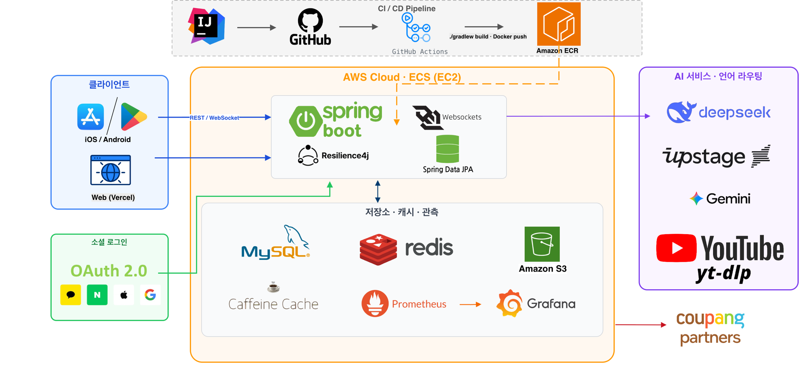
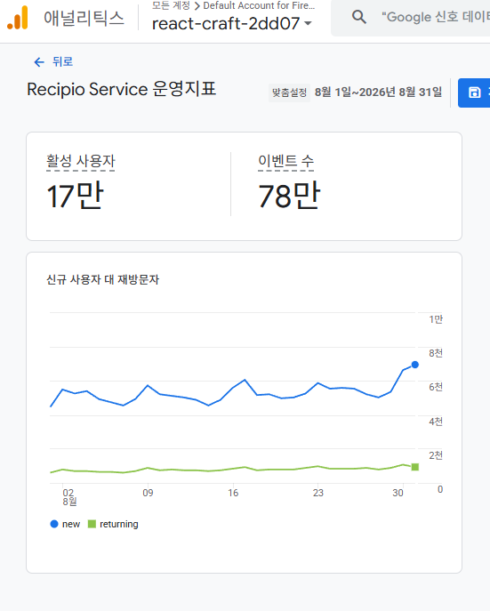

Java/Spring으로 실사용 서비스를 1년 이상 기획·개발·배포·운영해 온 서버 개발자입니다.
장시간 작업, 검색 엔진 장애, 호출 제한 외부 API처럼 정상 경로 밖에서 생기는 문제를 구조로 해결해 왔습니다.
요구사항을 데이터 모델과 API로 구체화하고 실패·복구 경로를 테스트와 운영 지표로 검증합니다.
레시피오는 사용자의 재료·영양·원가 조건에 맞는 레시피를 AI로 생성하고 사용자가 입력한 YouTube 영상에서 재료와 조리 단계를 추출해 구조화된 레시피로 제공하는 서비스입니다. 백엔드 2명, 프론트엔드 1명의 팀에서 핵심 사용자 흐름과 기능 우선순위를 함께 정하고 Java/Spring 기반 API·데이터 모델·비동기 작업 파이프라인·검색 이중화와 AWS 배포·운영을 맡았습니다. 사용자 0명에서 시작해 Google Analytics 4 기준 2026년 8월 1일~8월 31일 활성 사용자 17만 규모로 성장했습니다.
운영 규모 · 공개 레시피 61,913개 · 유효 재료 행 620,370건 · 최근 7일(2026.08.10–08.16) HTTP 요청 1,994,785건 중 5xx 응답 0건
서비스 아키텍처 — 배포·저장소·외부 연동

GA4 — 8월 활성 사용자 17만

측정 기간 2026.08.01–08.31 · 활성 사용자 17만 · 이벤트 78만
개발 기간 2026/07 ~|웹 출시 및 운영 2026/07 ~
트리피오(Tripio) — 여행 경험 공유·트립북 플랫폼
도시·시기·태그로 여행 후기를 찾고 마음에 드는 여행을 여러 트립북에 저장·정리하는 서비스입니다. Java/Spring 백엔드에서 검색·댓글·트립북·Google·Apple 인증을 개발하고 AWS에 배포했습니다. S3 이미지 업로드·리사이징과 도시별 날씨 데이터의 백그라운드 수집도 구성했습니다.
주요 경험
1. 장시간 작업 제어 — Job/Polling과 실패 보상으로 사용자 요청 분리
수십 초가 걸리는 AI 생성을 HTTP 요청에서 분리해 즉시 jobId를 반환하고 상태 조회·멱등성 키·DB 제약조건으로 중복 작업을 막았습니다. executor 포화와 중단된 job은 FAILED·환불·recovery로 정리했습니다.
→ 초기 응답 P50 41,107→204ms · 동시 요청 job 1개 · 중복 환불 방지 · 중단 작업 자동 복구
2. 검색 성능과 장애 대응 — MySQL/OpenSearch 하이브리드 검색
OpenSearch를 주 검색 경로로 사용하되 장애 시 MySQL QueryDSL로 자동 전환했습니다. source of truth는 MySQL에 두고 인덱싱은 AFTER_COMMIT으로 분리했으며 fallback 경로도 ngram FULLTEXT·ID 우선 조회·복합 인덱스로 고도화했습니다.
재료별 Coupang Search API 호출을 사용자 요청에서 분리하고 정규화된 재료 단위로 결과를 공유했습니다. 수집 worker는 DB에서 대상을 짧게 선점한 뒤 트랜잭션 밖에서 호출하며 429가 발생하면 Redis에 전역 중단 상태를 기록합니다.
→ 사용자 경로 외부 호출 0 · 429 전역 중단 · 공개 레시피 59,782개 중 99.99%에 하나 이상 상품 제공(2026.07.12)
4. 냉장고 재료 기반 레시피 조회 — 관계 모델과 2단계 조회로 성능 개선
재료–레시피 관계와 레시피별 전체 재료 수로 보유 재료 매칭률을 계산했습니다. 재료→레시피와 레시피→재료 양방향 인덱스를 구성하고 후보 ID를 먼저 조회한 뒤 현재 페이지 데이터만 조립해 N+1과 전체 count 비용을 줄였습니다.
→ P95 935→267ms · 양방향 인덱스 · ID 우선 조회와 page hydration · Page→Slice 전환
5. 동시 Refresh Token 회전 — 비관적 락과 grace replay로 강제 로그아웃 방지
Android WebView에서 갱신된 쿠키가 즉시 반영되지 않아 이전 refresh token이 다시 전송되는 상황을 처리했습니다. 현재 token과 grace token 조회에 PESSIMISTIC_WRITE를 적용해 병렬 요청 중 하나만 회전하고 나머지는 이미 발급된 새 token을 재전달했습니다.
→ 병렬 요청 ROTATED 1 + GRACE_REPLAY 1 · MySQL row lock·UNIQUE · lock timeout 메트릭
6. 도메인 특화 소형 모델 개발 — 데이터 구축부터 모델 비교·배포까지
범용 LLM이 한식의 재료 비율을 제대로 반영하지 못하고 JSON 구조도 자주 깨지는 문제를 확인했습니다. 약 4만 건의 레시피를 수집·정제해 3.3만 건을 선별하고 Qwen·Llama·Mistral·Gemma 4개 모델을 QLoRA로 학습·비교한 뒤 최종 모델을 배포했습니다.
→ 모델 4종 비교 · eval/loss 0.5423→0.4386 · JSON 준수율 99.10% · 재료 사용률 93%+
Deep Dive 1 — 장시간 작업 제어
AI 레시피 생성을 사용자 대기형 API에서 Job/Polling 기반 비동기 파이프라인으로 재설계
직접 담당 · 중복 요청 문제 확인, Job 상태·API와 멱등성·환불 경계 설계, Java/Spring 구현, 실패·포화 테스트, 배포 후 상태·복구 흐름 확인
1. 문제 정의
AI 레시피 생성은 완료까지 수십 초 이상 걸리는 장시간 작업이었습니다. 처음에는 하나의 HTTP 요청 안에서 이 시간을 그대로 기다리게 하는 구조였습니다. 응답 지연 자체보다 사용자가 기다리는 동안 발생하는 일이 문제였습니다. 생성 중에 앱을 종료하거나 페이지를 새로고침하면 진행 상태를 알 수 없었고 사용자는 생성이 됐는지 안 됐는지 모른 채 같은 요청을 다시 보냈습니다. DB를 확인해 보니 동일 조건으로 2~4회 연속 생성 요청이 들어오는 경우가 발견되었습니다. 페이지 이탈을 막으면 해결될 거라 생각했지만 네트워크 끊김이나 앱 강제 종료까지 막을 수는 없었습니다.
결국 요청과 생성 작업을 분리하지 않으면 이 문제는 구조적으로 해결할 수 없다고 판단했습니다.
2. 해결
요청을 받으면 즉시 jobId를 반환하고 실제 생성은 백그라운드에서 처리한 뒤 상태를 polling하도록 구조를 바꿨습니다. 핵심은 모델을 더 빠르게 만드는 게 아니었습니다. 사용자가 언제 이탈하더라도 작업 상태를 추적하고 정합성을 유지하는 구조가 필요했습니다.
이 구조를 실제 서비스에 넣으려니 세 가지를 함께 고려해야 했습니다.
1) 작업 종류가 다르면 경로도 달라야 했다
모든 AI 요청이 같은 방식으로 끝나지 않았습니다.
TEXT_MODE / IMAGE_MODE 분리
concept별 생성 경로 분리
실측 결과 단일 텍스트 경로는 약 22초, 2단계 생성 경로는 약 75초, 이미지 포함 경로는 약 43초 수준으로 차이가 커 하나의 blocking API로 다루기 어려웠습니다.
2) 실패하거나 겹칠 때 정합성이 깨지면 안 됐다
비동기 구조에서는 요청이 실패하거나 동시에 들어올 때 상태와 크레딧이 쉽게 어긋날 수 있었습니다.
같은 실패 job의 환불이 중복 적용되지 않도록 환불 transaction id를 고정
같은 요청이 동시에 들어와도 job이 하나만 생성되도록 멱등성 키와 DB 제약조건 적용
3) 과부하와 멈춤에 대한 안전망이 필요했다
장시간 작업은 잘 동작할 때보다 서버가 바쁘거나 작업이 멈출 때가 더 위험했습니다.
과부하로 제출이 거절되면 FAILED + refund로 정리
일정 시간 이상 멈춘 job은 scheduler가 감지해 recovery 수행
fake provider로 실패, 재시도, 포화 시나리오를 반복 검증
3. 결과
1) 초기 응답 P50을 41초에서 204ms로 줄였다
같은 이미지 포함 요청 기준으로 V1과 V2를 비교한 결과입니다.
경로
Initial Response P50
Initial Response P95
Job Total P50
V1 blocking
41,107 ms
50,039 ms
41,107 ms
V2 job/polling
204 ms
220 ms
43,043 ms
실제 완료 시간은 여전히 수십 초였지만 사용자가 기다리는 시간은 41.1초 → 204ms로 바뀌었습니다.
2) 측정과 검증으로 구조적 위험을 확인했다
대표 경로를 phase별로 계측한 결과 text_generation은 5.35초, db_save는 0.25초 수준으로 병목이 DB 저장이 아니라 text generation 구간에 집중되어 있었습니다. 진행률 모델도 이 실측에 맞춰 설계했습니다.
fake provider로 실패·재시도·포화 시나리오를 반복 검증하는 과정에서 초기 retry 경계가 비동기 경로에서 기대대로 동작하지 않는 문제를 발견했고 동기 invoker 계층으로 옮겨 수정했습니다.
운영 정합성도 함께 검증했습니다.
동시 요청 시 job 1개만 생성, 중복 환불 방지
과부하 시 즉시 실패 처리 + 크레딧 환불
중단된 job 자동 복구
특히 포화 검증은 tiny executor(core=1, max=1, queue=0) 환경에서 5건 동시 요청 중 1건만 처리되고 나머지 4건이 즉시 FAILED + refund로 정리되는지 확인한 테스트였습니다.
현재 구조는 단일 서버 ThreadPool을 기준으로 합니다. 작업량이나 애플리케이션 인스턴스가 더 늘어나면 메시지 큐와 분산 worker로 실행 위치와 재처리 책임을 분리해야 합니다. 현재 단계에서는 실패 job·환불·executor 거절·중단 작업 복구를 각각 추적해 외부 AI 실패가 사용자 크레딧 정합성 문제로 남지 않도록 운영하고 있습니다.
이 경험으로 정상 경로 구현에 그치지 않고 사용자의 이탈과 네트워크 끊김, 중복 요청 같은 엣지 케이스까지 먼저 고려해야 안정적으로 운영할 수 있다는 기준이 생겼습니다.
Deep Dive 2 — 검색
검색 엔진 장애 시에도 멈추지 않는 하이브리드 검색 구조와 fallback 설계
직접 담당 · 검색 경로와 인덱싱·복구 구조 설계, OpenSearch/QueryDSL 구현, benchmark 환경과 요청 시나리오 구성, 장애 주입·성능 측정, 운영 메트릭 확인
1. 문제 정의
레시피 검색은 사용자가 서비스를 탐색할 때 가장 자주 거치는 핵심 경로였습니다. 실제 운영 과정에서도 검색 응답이 느려지는 구간이 있었고 레시피 수와 요청이 늘어날수록 DB 기반 검색만으로는 한계가 분명해졌습니다. 성능을 개선하려고 OpenSearch를 도입했지만 프리티어 환경에서는 외부 검색 엔진 의존 자체가 새로운 리스크로 느껴졌습니다. 검색이 빨라지더라도 장애가 나면 서비스 전체가 멈출 수 있기 때문입니다.
핵심은 단순히 "OpenSearch가 빠른가"를 확인하는 데 있지 않았습니다. 성능을 높이면서도 장애 시 검색이 계속 동작해야 했습니다.
2. 해결
검색을 한 가지 경로로만 설계하지 않았습니다. OpenSearch를 주 검색 경로로 두고 장애 시에는 QueryDSL 기반 DB 검색으로 자동 fallback되는 이중 구조를 만들었습니다. 인덱싱은 쓰기 트랜잭션과 분리해 검색 품질 문제가 요청 실패로 바로 번지지 않도록 했습니다. 검증 과정에서는 다음을 고려했습니다.
1) 먼저, 공정하게 비교할 수 있는 환경이 필요했다
"OpenSearch가 빠를 것 같다"는 가정만으로는 설득력이 없었기 때문에 운영과 분리된 benchmark 환경을 먼저 만들었습니다.
production snapshot 기반 benchmark copy RDS (사용자 정보 익명화)
로컬 OpenSearch 2.17.1 단일 노드 + SSH 터널 DB 연결
동시성 1 / 5 / 10, 반복 3회, 엔진당 총 요청 수 11,700건
2) 외부 검색 엔진에 의존할수록 장애 시 대안도 함께 설계해야 했다
OpenSearch를 주 경로로 두는 순간 검색 엔진 장애가 곧 서비스 중단으로 이어질 수 있었습니다.
search.engine=auto 기반 이중 경로
OpenSearch 실패 시 QueryDSL fallback
3) 검색 인덱싱은 요청 정합성과 분리해야 했다
인덱싱 실패가 사용자 요청 실패로 바로 이어지면 안 됐기 때문에 쓰기 요청과 검색 인덱싱의 책임을 분리했습니다.
즉 이 결과는 1회성 체감 테스트가 아니라 같은 데이터와 같은 요청 세트에서 엔진당 11,700건을 반복 측정해 얻은 비교였습니다.
2) OpenSearch가 죽어도 검색 API는 살아남았다
OpenSearch를 중단한 상태에서 fallback benchmark를 별도로 수행했습니다.
Concurrency
QueryDSL P95
Fallback P95
Failure Rate
1
251.95 ms
312.91 ms
0%
5
360.43 ms
348.89 ms
0%
10
695.75 ms
735.97 ms
0%
OpenSearch가 죽어도 검색 API는 0% failure로 계속 응답했고 fallback 지연도 QueryDSL baseline과 같은 운영 범위 안에 머물렀습니다.
3) 운영 관측까지 보강했다
검색 지연, fallback 전환 횟수, 엔진 상태 변화를 메트릭으로 추적했고 요청 단위 traceId로 검색 요청부터 fallback 전환까지 같은 흐름으로 추적하도록 구성했습니다. 인덱싱 실패는 별도 로그로 기록하고 복구 서비스로 보완했으며 새 인덱스는 bulk reindex 후 실패 ID를 확인하고 alias를 교체하도록 구성했습니다.
이 결과는 로컬 OpenSearch와 SSH 터널 기반 benchmark 환경에서 얻은 값이므로 절대 latency로 일반화하지 않았습니다. 같은 데이터와 요청 세트를 반복해 상대 차이를 확인했으며 운영에서는 검색 지연·fallback 전환·엔진 상태·인덱싱 실패를 별도 지표와 로그로 추적하고 있습니다.
Deep Dive 3 — 호출 제한 외부 API
분당 호출 제한이 있는 Coupang Search API를 사용자 요청에서 분리한 DB 기반 수집 파이프라인
직접 담당 · 사용자 요청과 수집 작업의 경계 정의, 재료·상품 상태 모델과 scheduler 설계, Java/Spring 구현, DB 선점·429 중단·재시도 정책 구성, 배포 후 데이터 커버리지 확인
1. 문제 정의
AI 레시피가 생성될 때마다 재료별 상품을 즉시 검색하면 한 레시피에서도 여러 번 외부 API를 호출하게 됩니다. 사용자와 레시피가 늘수록 호출량이 그대로 증가해 쿠팡 Search API의 분당 호출 제한과 429에 부딪히고 외부 장애가 레시피 생성 지연이나 실패로 번질 수 있었습니다. 동일한 ‘양파’를 여러 레시피가 사용해도 매번 다시 검색하는 구조 역시 낭비였습니다.
해결 목표는 API를 더 빨리 호출하는 게 아니었습니다. 사용자 요청량과 외부 API 호출량의 결합을 끊고 동일 재료의 결과를 서비스 전체에서 재사용하려 했습니다.
2. 해결
1) 사용자 경로에서는 외부 API를 호출하지 않았다
레시피 생성재료 row 저장 후 사용자 응답 완료
→
MySQL Queue정규화 이름·상태· 재조회 시각 저장
→
Background Schedulers매칭·이름 정제· 제한 속도 수집
→
DB Read API저장된 상품만 조회 외부 API 호출 0
사용자 조회 API는 coupang_infos와 coupang_info_products만 읽습니다. 외부 API가 느리거나 중단돼도 이미 저장된 상품은 계속 제공하고 아직 수집되지 않은 재료는 빈 결과로 안전하게 응답합니다.
2) 세 스케줄러가 서로 다른 책임을 맡게 했다
기본 5분 주기
① Matcher Scheduler
새 recipe ingredient를 한국어 이름으로 정규화합니다. 이미 등록된 이름이면 즉시 연결하고 없으면 AI 검토 candidate로 보냅니다. 많이 쓰인 재료는 usage_weight를 올립니다.
Coupang Search quota 사용 안 함
기본 1시간 주기
② AI Review Scheduler
미등록·변형 재료명을 batch로 검토해 APPROVE·RENAME·DROP으로 정리합니다. 30건 batch 실패 시 10건 단위로 축소해 재시도하고 정리된 이름을 공유 상품 키로 만듭니다.
Coupang Search quota 사용 안 함
기본 3초 주기
③ Collection Worker
DB에서 수집 대상 하나만 선점하고 트랜잭션을 종료한 뒤 Search API를 호출합니다. 가져온 10개 중 우선순위에 따라 최대 5개를 저장합니다.
유일하게 Coupang Search quota 사용
재료 매칭NEW→MATCHEDPENDING_AIWAITING_KONO_MATCH
상품 수집PENDING→READYNO_RESULTERROR+ next_collect_at · attempts · collect_locked_at
3) 제한된 호출량은 필요한 데이터부터 사용했다
선점 순서
대상
판단 기준
1
PENDING
아직 한 번도 수집하지 않은 신규 재료
2
ERROR
재시도 시각 도달 · attempts < 5
3
READY
마지막 수집 후 기본 7일이 지난 데이터
4
NO_RESULT
기본 30일의 재검색 대기기간이 지난 데이터
같은 상태에서는 usage_weight가 높은 재료, 더 오래된 데이터, 작은 ID 순으로 처리해 실제 레시피에서 많이 쓰이는 재료에 제한된 호출량을 먼저 배분했습니다.
4) DB lock은 짧게 잡고 외부 호출은 트랜잭션 밖으로 분리했다
TX 1 · CLAIM
작업 하나만 선점
FOR UPDATE SKIP LOCKED로 ID를 고르고 collect_locked_at을 기록한 뒤 즉시 커밋
NO TX · CALL
Search API 호출
느리고 실패 가능한 네트워크 구간에서는 DB row lock을 보유하지 않음
TX 2 · SETTLE
결과만 저장
READY·NO_RESULT·ERROR 상태와 상품·다음 시도 시각을 짧은 트랜잭션으로 반영
5) 호출 제한과 장애를 파이프라인 전체가 함께 흡수하게 했다
기본 3초 fixed delay + 단일 thread executor로 한 인스턴스에서 이론상 분당 20회 이하로 pacing
일반 오류는 1시간부터 지수 백오프하고 최대 5회까지만 자동 재시도
429 발생 시 현재 row의 lock을 해제하고 Redis에 전역 halt를 기록해 모든 worker가 호출을 중단
기본 정책은 KST 다음 날 00:10 재개이며 관리자 API에서 pause·resume·상태와 남은 TTL 확인
Redis 제어 상태를 읽지 못하면 새 API 호출을 멈추는 fail-closed 방식 적용
3. 결과
596,603
공개 레시피의 대상 재료 행
96.48%
재료 행 기준 상품 준비 비율
99.99%
하나 이상 상품을 제공한 공개 레시피 비율
2026.07.12 운영 DB 측정 · ACTIVE·PUBLIC·LISTED 레시피 59,782개 중 59,776개에서 하나 이상의 상품을 제공했으며 상품이 준비된 재료 행은 575,574건이었습니다.
결과적으로 사용자 API는 쿠팡 호출 한도와 무관하게 DB에 저장된 상품을 응답하고 외부 호출은 정규화된 재료 단위로 공유·우선순위화·지연 실행됩니다. 사용자 요청량이 늘어도 외부 호출량이 같은 비율로 증가하지 않는 구조를 만들었습니다.
확장 기준 · 현재 규모에서는 단일 worker로 호출량을 제어했으며 다중 인스턴스로 확장할 때는 Redis 기반 전역 rate limiter로 호출 quota를 공유해야 한다고 판단했습니다.